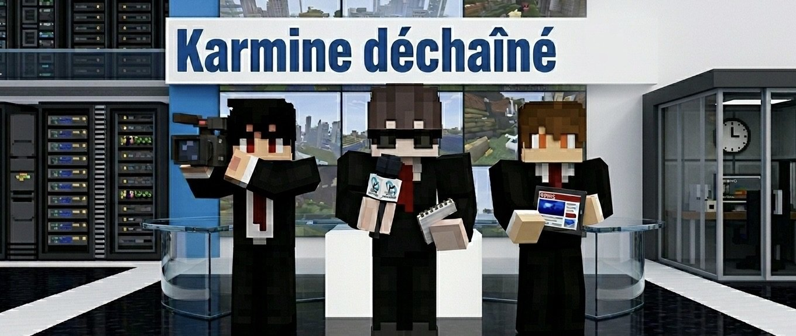

Enquête
Boo assassiné : le territoire sous le choc
Le Happy Ghast bien-aimé des Belazur aurait été kidnappé puis tué par Alan Leonhart. Une affaire qui secoue toute la communauté.
Lire →
Vie du journalAvant de sortir les scoops, il fallait présenter ceux qui tiennent la plume. Découvrez les frères Bodin, le trio fondateur d'un journal indépendant, libre et déterminé à faire parler le territoire.
Le Happy Ghast bien-aimé des Belazur aurait été kidnappé puis tué par Alan Leonhart. Une affaire qui secoue toute la communauté.
Lire →Des individus non identifiés ont jeté des œufs sur l'hôpital du territoire. Le Karmine Déchaîné révèle l'affaire et lance un appel à témoins.
Lire →Motivé, disponible et prêt à retrousser ses manches, Georges Frog cherche une opportunité auprès d'un commerce, d'une guilde ou d'un entrepreneur.
Lire →Le Karmine Déchaîné est un journal indépendant, sans publicité imposée, sans actionnaire. Si vous souhaitez soutenir notre travail de façon anonyme, vous pouvez effectuer un virement directement sur notre compte.
Le don est entièrement anonyme. Merci de votre soutien.